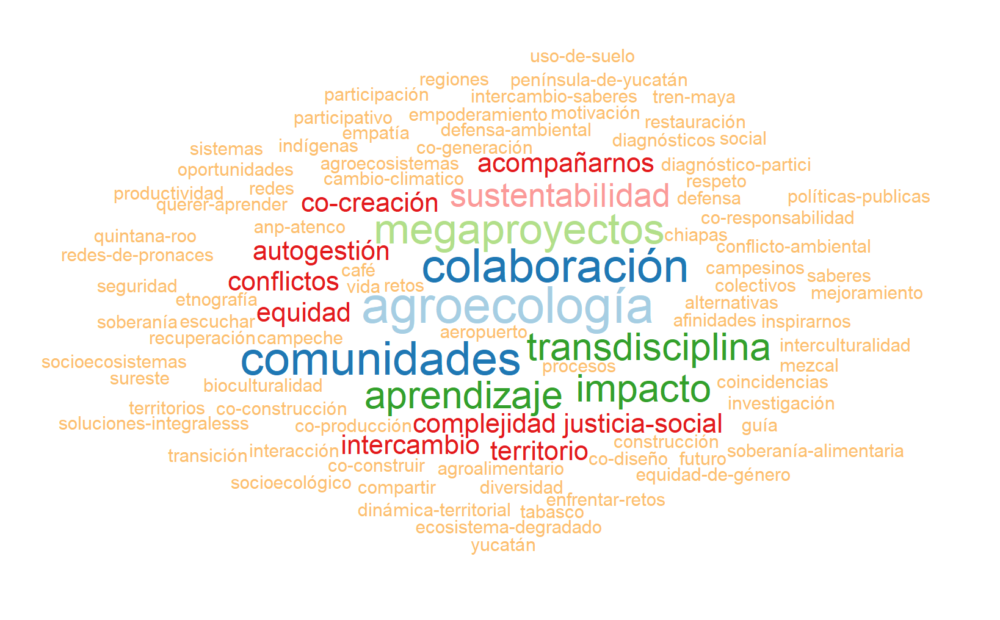

| Carpetas Pronaces SSyS |
|---|
| 1 Memorias sobre el trabajo del comité |
| 18 Pronaii_documentos |
| Análisis Automatizado (minería de textos) |
| Atlas |
| Ayudante Académico para el Pronace SSyS |
| Comisiones del Grupo Operativo |
| Comité Ejecutivo_Documentos Internos |
| Convocatoria 2019 |
| Convocatoria 2021 |
| Diálogos SSyS |
| Documentos históricos de formación del Pronaces SSyS |
| Estancias postdoctorales PRONACE SSyS |
| Etapa 1 Pronaii Evaluaciones Informes |
| Evaluaciones Pronaii 2022 |
| Glosario |
| Guía para elaborar PRONAII |
| Ilustraciones |
| Informe final técnico Pronaces SSyS 2019-2022 |
| Investigadores por México |
| Libro Miradas problemas socioecológicos |
| Libro Semillas para la Sustentabilidad |
| Micrositio |
| Participación en eventos |
| Plan de trabajo |
| Ponencia RISC |
| Presentaciones ProNacE SSyS |
| Pronaces Conacyt |
| Proyecto 2022-2024 |
| Proyectos semilla |
| SSyS-R-scripts |
| Taller Metaanalisis María y Faustino |
| Talleres 2020-2021 |
| Talleres 2022 |
| Talleres 2023 |
| Webinarios |
| indicadores evaluación |

Datos reunidos en GoogleDrive
Procesamiento de los datos reunidos en la carpeta del Pronaces SSyS del Google Drive compartido. La lista de carpetas en el que tenemos las cosas del Pronaces SSyS es esta:
Consolidación de los datos
1 Ahora exploramos los datos que hemos reunido en el grupo motor de incidencia. Hay que localizar en dónde están esos datos. Los busco en la carpeta general de Comisiones del Grupo Operativo. Están en el documento Interacción temáticas Pronaiis Pronaces SSyS
| Carpetas GM-Incidencia |
|---|
| 10a Reunion 16 de junio 2023 |
| 1era Reunión 1 de julio 2022 |
| 2a Reunión 5 agosto 2022 |
| 3a Reunión 2 septiembre 2022 |
| 4a reunión 11 de nov 2022 |
| 5a Reunión 20 enero 2023 |
| 6a reunion 17 febrero 2023 |
| 7a Reunión 17 marzo 2023 |
| 8a reunión 21abr2023 |
| 9a Reunión 19 de mayo 2023 |
| Catálogo de productos |
| Copia de cubo_de_conceptos.xlsx |
| Equipo Atlas |
| GMAI Video prueba Atlas.mp4 |
| Interacción temáticas Pronaiis Pronaces SSyS |
| MapeoActorescafeV3.pptx |
| Objetivos Grupo Motor AI.docx |
| Plan de Acción Articulación para la Incidencia |
| Posicionamiento V2.docx |
| V3 Posicionamiento Pronaces SSyS |
| conceptos.xlsx |
Interacciones temáticas
Reflexionando sobre el asunto que queremos desarrollar, imagino que una forma de organizar estos datos es contruyendo un cubo de relaciones entre los conceptos propuestos por los Pronaii. La meta es entonces presentar así lo que hemos reunido en el documento Interacción temáticas Pronaiis Pronaces SSyS.
! Using an auto-discovered, cached token. To suppress this message, modify your code or options to clearly consent to
the use of a cached token. See gargle's "Non-interactive auth" vignette for more details: <https://gargle.r-lib.org/articles/non-interactive-auth.html>ℹ The googlesheets4 package is using a cached token for 'equihuam@gmail.com'.✔ Reading from "Interacción temáticas Pronaiis Pronaces SSyS".✔ Range ''Ejemplo FAN-319104'!3:10000000'.New names:
✔ Reading from "Interacción temáticas Pronaiis Pronaces SSyS".
✔ Range ''NAICM 319120'!3:10000000'.
New names:
✔ Reading from "Interacción temáticas Pronaiis Pronaces SSyS".
✔ Range ''Terr Cafet 319068'!3:10000000'.
New names:
✔ Reading from "Interacción temáticas Pronaiis Pronaces SSyS".
✔ Range ''Mezcal 319061'!3:10000000'.
New names:
✔ Reading from "Interacción temáticas Pronaiis Pronaces SSyS".
✔ Range ''Abejas 319105'!3:10000000'.
New names:
✔ Reading from "Interacción temáticas Pronaiis Pronaces SSyS".
✔ Range ''Tren Maya 319113'!3:10000000'.
New names:
✔ Reading from "Interacción temáticas Pronaiis Pronaces SSyS".
✔ Range ''Lab Ganad 319075'!3:10000000'.
New names:
✔ Reading from "Interacción temáticas Pronaiis Pronaces SSyS".
✔ Range ''Katuwan 319054'!3:10000000'.
New names:
✔ Reading from "Interacción temáticas Pronaiis Pronaces SSyS".
✔ Range ''Cocina Colaboratorio 319065 '!3:10000000'.
New names:
• `` -> `...21`
• `` -> `...22`Categorías conceptuales
Veamos que categorías conceptuales se han agregado a la lista de temas. Asumiré que esto aparece como encabezado de columnas. Subordinado a este nivel están los conceptos propuestos, idealmente como palabras sueltas, bigramas o máximo trigramas. Desafortunadamente encontramos frases explicativas largas que habrá que retrabajar.
Hay algunas columnas que no quedaron adecuadamente etiquetadas, pues el equipo respectivo optó por expandir la celda sobre varias columnas. Corregiremos esto asignando la última etiqueta significativa encontrada antes de una referencia numérica a columna. Esto sólo está ocurriendo en temas. Esta operación puede tener distinto efecto en cada hoja, así que hay que hacerla en cada una por separado.
Hay algunas celdas quue contienen varias ideas separadas por comas, otras las separan con diagonales. Asumiré que esas listas tratan de varios “concepto” distintos, así que los separaré.
[1] "Hojas procesadas:"[1] " Ejemplo FAN-319104"
[1] " NAICM 319120"
[1] " Terr Cafet 319068"
[1] " Mezcal 319061"
[1] " Abejas 319105"
[1] " Tren Maya 319113"
[1] " Lab Ganad 319075"
[1] " Katuwan 319054"
[1] " Cocina Colaboratorio 319065 "Los datos reunidos y el resultado de las operaciones de corrección de datos descrita se guardan en el archivo: cubo_de_conceptos.csv.
| tema | concepto | Abejas 319105 | Ejemplo FAN-319104 | Katuwan 319054 | Mezcal 319061 | NAICM 319120 | Terr Cafet 319068 |
|---|---|---|---|---|---|---|---|
| Actores | Academia | 0 | 1 | 0 | 0 | 0 | 0 |
| Actores | Agrícolas y Pecuarias (INIFAP) | 0 | 0 | 0 | 0 | 0 | 1 |
| Actores | Apicultoras y Apicultores | 1 | 0 | 0 | 0 | 0 | 0 |
| Actores | Apicultores | 1 | 0 | 0 | 0 | 0 | 0 |
| Actores | Bélgica | 0 | 0 | 1 | 0 | 0 | 0 |
| Actores | CAFECOL | 0 | 0 | 0 | 0 | 0 | 1 |
| Actores | CEPCO | 0 | 0 | 0 | 0 | 0 | 1 |
| Actores | COEPRIS | 0 | 1 | 0 | 0 | 0 | 0 |
| Actores | COFEPRIS | 0 | 1 | 0 | 0 | 0 | 0 |
| Actores | CONANP | 0 | 1 | 0 | 0 | 0 | 0 |
| Actores | Café Gourmet Sierra Azul | 0 | 0 | 0 | 0 | 0 | 1 |
| Actores | Campesinos Ecológicos de la Sierra Madre de Chiapas (CESMACH) | 0 | 0 | 0 | 0 | 0 | 1 |
| Actores | Catuai Amarillo | 0 | 0 | 0 | 0 | 0 | 1 |
| Actores | Cholom Balá | 0 | 0 | 0 | 0 | 0 | 1 |
| Actores | Coco Tortuga A.C. | 0 | 0 | 1 | 0 | 0 | 0 |
| Actores | Comisión Estatal de Servicios Públicos de Ensenada | 0 | 1 | 0 | 0 | 0 | 0 |
| Actores | Comon Yaj Noptic | 0 | 0 | 0 | 0 | 0 | 1 |
| Actores | Comunidades pesqueras | 0 | 1 | 0 | 0 | 0 | 0 |
| Actores | Consejo Consultivo de Cambio Climático | 0 | 0 | 0 | 0 | 0 | 1 |
| Actores | Consejo Estatal de Productores de Vainilla Veracruzanos A.C. | 0 | 0 | 1 | 0 | 0 | 0 |
| Actores | Consejo Totonaco de Organizaciones y Comunidades | 0 | 0 | 1 | 0 | 0 | 0 |
| Actores | Consejo para la Protección y Preservación de la Ceremonia Ritual de Voladores A.C. | 0 | 0 | 1 | 0 | 0 | 0 |
| Actores | Coordinadora Latinoamericana y del Caribe de Pequeños(as) Productores(as) y Trabajadores(as) de Comercio Justo (CLAC) | 0 | 0 | 0 | 0 | 0 | 1 |
| Actores | Dirección General de Divulgación de la Ciencia | 0 | 0 | 1 | 0 | 0 | 0 |
| Actores | Ejidatario (a)s | 1 | 0 | 0 | 0 | 0 | 0 |
| Actores | El Colegio de la Frontera Sur (ECOSUR) | 0 | 0 | 0 | 0 | 0 | 1 |
| Actores | Facultad de Ciencias | 0 | 0 | 1 | 0 | 0 | 0 |
| Actores | Facultad de Ingenieria | 0 | 0 | 1 | 0 | 0 | 0 |
| Actores | Fairtrade de Oaxaca y Chiapas | 0 | 0 | 0 | 0 | 0 | 1 |
| Actores | Fondo para la Paz (FPP) | 0 | 0 | 0 | 0 | 0 | 1 |
| Actores | Herpetología Mexicana | 0 | 0 | 1 | 0 | 0 | 0 |
| Actores | INCAFESAM | 0 | 0 | 0 | 0 | 0 | 1 |
| Actores | INRAE | 0 | 0 | 1 | 0 | 0 | 0 |
| Actores | IRD | 0 | 0 | 1 | 0 | 0 | 0 |
| Actores | Industria privada de maricultura | 0 | 1 | 0 | 0 | 0 | 0 |
| Actores | Institudo de Biología | 0 | 0 | 1 | 0 | 0 | 0 |
| Actores | Instituto Nacional de Investigaciones Forestales | 0 | 0 | 0 | 0 | 0 | 1 |
| Actores | Instituto de Ecología | 0 | 0 | 1 | 0 | 0 | 0 |
| Actores | Instituto de Ecología A. C. (INECOL) | 0 | 0 | 0 | 0 | 0 | 1 |
| Actores | Instituto de Geología | 0 | 0 | 1 | 0 | 0 | 0 |
| Actores | Instituto de Investigaciones Económicas | 0 | 0 | 1 | 0 | 0 | 0 |
| Actores | Instituto tecnológico de Huatusco | 0 | 0 | 0 | 0 | 0 | 1 |
| Actores | Itzeni A.C. | 0 | 0 | 1 | 0 | 0 | 0 |
| Actores | MNHN (Museo Nacional de Historia Natural) | 0 | 0 | 1 | 0 | 0 | 0 |
| Actores | Maya Vinic | 0 | 0 | 0 | 0 | 0 | 1 |
| Actores | OXFAM México | 0 | 0 | 0 | 0 | 0 | 1 |
| Actores | Paris | 0 | 0 | 1 | 0 | 0 | 0 |
| Actores | Permisionarios locales | 0 | 1 | 0 | 0 | 0 | 0 |
| Actores | Productores (acuacultores) | 0 | 1 | 0 | 0 | 0 | 0 |
| Actores | Productores Agrícolas Hermanos Flores S.P.R. de R.L. de C.V | 0 | 0 | 1 | 0 | 0 | 0 |
| Actores | Productores Sierra de Zongolica | 0 | 0 | 0 | 0 | 0 | 1 |
| Actores | SADER | 0 | 0 | 0 | 0 | 0 | 1 |
| Actores | SEBIEN | 0 | 0 | 0 | 0 | 0 | 1 |
| Actores | SEDATU | 0 | 1 | 0 | 0 | 0 | 0 |
| Actores | SEMAR | 0 | 1 | 0 | 0 | 0 | 0 |
| Actores | SEMARNAT | 0 | 1 | 0 | 0 | 0 | 0 |
| Actores | Secretaría de Economía | 0 | 0 | 0 | 0 | 0 | 1 |
| Actores | Sector salud | 0 | 1 | 0 | 0 | 0 | 0 |
| Actores | Sector turistico | 0 | 1 | 0 | 0 | 0 | 0 |
| Actores | Sociedad Civil Triunfo Verde | 0 | 0 | 0 | 0 | 0 | 1 |
| Actores | Sociedad civil | 0 | 1 | 0 | 0 | 0 | 0 |
| Actores | Soluciones Circulares A.C. | 0 | 0 | 1 | 0 | 0 | 0 |
| Actores | Tseltal Tsotsil | 0 | 0 | 0 | 0 | 0 | 1 |
| Actores | Tsumat Artesanía Totonaca | 0 | 0 | 1 | 0 | 0 | 0 |
| Actores | UNAM | 0 | 0 | 1 | 0 | 0 | 0 |
| Actores | Universidad Autonoma del Estado de Hidalgo | 0 | 0 | 1 | 0 | 0 | 0 |
| Actores | Universidad Autónoma Chapingo (UACH-CRUO) | 0 | 0 | 0 | 0 | 0 | 1 |
| Actores | Universidad Autónoma de Chiapas | 0 | 0 | 0 | 0 | 0 | 1 |
| Actores | Universidad Benito Juárez de Oaxaca | 0 | 0 | 0 | 0 | 0 | 1 |
| Actores | Universidad Libre de Bruselas | 0 | 0 | 1 | 0 | 0 | 0 |
| Actores | Universidad Nacional Autónoma de México (UNAM) | 0 | 0 | 0 | 0 | 0 | 1 |
| Actores | Universidad Paris 8 Francia | 0 | 0 | 1 | 0 | 0 | 0 |
| Actores | Universidad Sueca de Ciencias Agrícolas (SLU) | 0 | 0 | 1 | 0 | 0 | 0 |
| Actores | Universidad Veracruzana | 0 | 0 | 1 | 0 | 0 | 0 |
| Actores | Universidad de Ciencias y Artes de Chiapas (UNICACH) | 0 | 0 | 0 | 0 | 0 | 1 |
| Actores | Unión Majomut | 0 | 0 | 0 | 0 | 0 | 1 |
| Actores | Unión de Comunidades Indígenas de la Región del Istmo (UCIRI) | 0 | 0 | 0 | 0 | 0 | 1 |
| Actores | Yeni Navan | 0 | 0 | 0 | 0 | 0 | 1 |
| Actores | acedemicos | 1 | 0 | 0 | 0 | 0 | 0 |
| Actores | funcionarios de gobierno | 1 | 0 | 0 | 0 | 0 | 0 |
| Cambios que se están buscando | Abundancia de micorrizas en raíces terrestres primarias | 0 | 0 | 1 | 0 | 0 | 0 |
| Cambios que se están buscando | Abundancia de micorrizas en raíces terrestres secundarias | 0 | 0 | 1 | 0 | 0 | 0 |
| Cambios que se están buscando | Acumulación de especies herpetofaunísticas | 0 | 0 | 1 | 0 | 0 | 0 |
| Cambios que se están buscando | Acumulación de especies vegetales | 0 | 0 | 1 | 0 | 0 | 0 |
| Cambios que se están buscando | Acumulación de mesofauna | 0 | 0 | 1 | 0 | 0 | 0 |
| Cambios que se están buscando | Adaptación basada en la Naturaleza | 1 | 0 | 0 | 0 | 0 | 0 |
| Cambios que se están buscando | Aumento de la sustentabilidad costero | 0 | 1 | 0 | 0 | 0 | 0 |
| Cambios que se están buscando | Banco de semillas de árboles nativos | 0 | 0 | 1 | 0 | 0 | 0 |
| Cambios que se están buscando | Catalogo de especies nocivas con secuencias de ADN de cepas regionales y detalles morfológicos | 0 | 1 | 0 | 0 | 0 | 0 |
| Cambios que se están buscando | Confirmación de la identificación morfológica y molecular de especies de dinoflagelados. | 0 | 1 | 0 | 0 | 0 | 0 |
| Cambios que se están buscando | Conversión a sistemas agroforestal | 0 | 0 | 1 | 0 | 0 | 0 |
| Cambios que se están buscando | Corredor biológico | 0 | 0 | 1 | 0 | 0 | 0 |
| Cambios que se están buscando | Desarrollo de biofertilizante | 0 | 0 | 1 | 0 | 0 | 0 |
| Cambios que se están buscando | Descripción de efectos nocivos de especies tóxicas en camarones | 0 | 1 | 0 | 0 | 0 | 0 |
| Cambios que se están buscando | Efecto de FAN sobre organismos de importancia comercial | 0 | 1 | 0 | 0 | 0 | 0 |
| Cambios que se están buscando | Impulso de huertos familiares | 0 | 0 | 1 | 0 | 0 | 0 |
| Cambios que se están buscando | Impulso del artesania local | 0 | 0 | 1 | 0 | 0 | 0 |
| Cambios que se están buscando | Incremento del valor del café para las familias que venden producto directamente en cafeterías | 0 | 0 | 0 | 0 | 0 | 1 |
| Cambios que se están buscando | Indicadores de resultado | 1 | 0 | 0 | 0 | 0 | 0 |
| Cambios que se están buscando | Indicadores de sustentabilidad y bienestar costero | 0 | 1 | 0 | 0 | 0 | 0 |
| Cambios que se están buscando | Listado de especies más abundantes en la zona y su variabilidad mensual | 0 | 1 | 0 | 0 | 0 | 0 |
| Cambios que se están buscando | Manejo holístico de plagas y enfermedades | 0 | 0 | 0 | 0 | 0 | 1 |
| Cambios que se están buscando | Mantener agrobiodiversidad | 0 | 0 | 0 | 0 | 0 | 1 |
| Cambios que se están buscando | Mantener fertilidad | 0 | 0 | 0 | 0 | 0 | 1 |
| Cambios que se están buscando | Mitigación de los impactos en la población | 0 | 1 | 0 | 0 | 0 | 0 |
| Cambios que se están buscando | Monitorear la zona de alimentación del tiburón ballena | 0 | 1 | 0 | 0 | 0 | 0 |
| Cambios que se están buscando | Normativos | 1 | 0 | 0 | 0 | 0 | 0 |
| Cambios que se están buscando | Número de recursos turisticos convertidos en atractivos | 0 | 0 | 1 | 0 | 0 | 0 |
| Cambios que se están buscando | Predicción de los eventos FAN | 0 | 1 | 0 | 0 | 0 | 0 |
| Cambios que se están buscando | Prevención en la población | 0 | 1 | 0 | 0 | 0 | 0 |
| Cambios que se están buscando | Protección de fauna de valor cultural | 0 | 0 | 1 | 0 | 0 | 0 |
| Cambios que se están buscando | Red de semillas nativas entre productores | 0 | 0 | 1 | 0 | 0 | 0 |
| Cambios que se están buscando | Reforestación con plantas de importancia cultural y ecológica | 0 | 0 | 1 | 0 | 0 | 0 |
| Cambios que se están buscando | Reforestación con plantas de importancia ecológica autóctona | 0 | 0 | 1 | 0 | 0 | 0 |
| Cambios que se están buscando | Reforestación con plantas de importancia ecológica autóctona en sistemas agroforestal | 0 | 0 | 1 | 0 | 0 | 0 |
| Cambios que se están buscando | Reforestación de importancia ecológica autóctona | 0 | 0 | 1 | 0 | 0 | 0 |
| Cambios que se están buscando | Regeneración de habitats para la fauna | 0 | 0 | 1 | 0 | 0 | 0 |
| Cambios que se están buscando | Restauración ambiental de las zonas afectadas | 0 | 0 | 1 | 0 | 0 | 0 |
| Cambios que se están buscando | Soluciones basadas en alianza de saberes | 1 | 0 | 0 | 0 | 0 | 0 |
| Cambios que se están buscando | Soluciones basadas en el conocimiento indígena o local | 1 | 0 | 0 | 0 | 0 | 0 |
| Cambios que se están buscando | indicadores de resultado | 0 | 1 | 0 | 0 | 0 | 0 |
| Enfoque cultural / | Alianza de saberes | 1 | 0 | 0 | 0 | 0 | 0 |
| Enfoque cultural / | Cosmovisión totonaca | 0 | 0 | 1 | 0 | 0 | 0 |
| Enfoque cultural / | Guardaparques | 0 | 1 | 0 | 0 | 0 | 0 |
| Enfoque cultural / | Permisionarios para la extracción de almeja generosa | 0 | 1 | 0 | 0 | 0 | 0 |
| Enfoque cultural / | Pescadores | 0 | 1 | 0 | 0 | 0 | 0 |
| Enfoque cultural / | Usos y costumbres totonacos | 0 | 0 | 1 | 0 | 0 | 0 |
| Enfoque cultural / | comunidades | 0 | 1 | 0 | 0 | 0 | 0 |
| Enfoque cultural / | cooperativas pesqueras | 0 | 1 | 0 | 0 | 0 | 0 |
| Enfoque cultural / | prestadores de servicios turísticos | 0 | 1 | 0 | 0 | 0 | 0 |
| Enfoque cultural / | productores | 0 | 1 | 0 | 0 | 0 | 0 |
| Enfoque de genero (Por ejemplo, el papel de las mujeres en la toma de decisiones) | Economía familiar | 0 | 1 | 0 | 0 | 0 | 0 |
| Enfoque de genero (Por ejemplo, el papel de las mujeres en la toma de decisiones) | Equidad | 0 | 0 | 1 | 0 | 0 | 0 |
| Enfoque de genero (Por ejemplo, el papel de las mujeres en la toma de decisiones) | Intergeneracional | 0 | 0 | 1 | 0 | 0 | 0 |
| Enfoque de genero (Por ejemplo, el papel de las mujeres en la toma de decisiones) | Pescadoras | 0 | 1 | 0 | 0 | 0 | 0 |
| Enfoque de genero (Por ejemplo, el papel de las mujeres en la toma de decisiones) | en equidad | 0 | 0 | 0 | 1 | 0 | 0 |
| Enfoque de genero (Por ejemplo, el papel de las mujeres en la toma de decisiones) | lineas de producción | 0 | 1 | 0 | 0 | 0 | 0 |
| Enfoques | Buen vivir | 0 | 0 | 1 | 0 | 0 | 0 |
| Enfoques | Economía circular | 0 | 0 | 1 | 0 | 0 | 0 |
| Enfoques | Enfoque de sistemas socioecológicos | 1 | 0 | 0 | 0 | 0 | 0 |
| Enfoques | Enfoque intergeneracional | 0 | 1 | 0 | 0 | 0 | 0 |
| Enfoques | Gobernanza | 0 | 0 | 1 | 0 | 0 | 0 |
| Enfoques | Histeresis biocultural | 0 | 0 | 1 | 0 | 0 | 0 |
| Enfoques | Interculturalidad | 0 | 0 | 1 | 0 | 0 | 0 |
| Enfoques | Perspectiva de género | 0 | 1 | 0 | 0 | 0 | 0 |
| Enfoques | Respuesta a cambio climático | 0 | 0 | 1 | 0 | 0 | 0 |
| Enfoques | Sistemas agroforestales | 0 | 0 | 1 | 0 | 0 | 0 |
| Enfoques | Sustentabilidad | 0 | 0 | 1 | 0 | 0 | 0 |
| Enfoques | Transdisciplina | 0 | 0 | 1 | 0 | 0 | 0 |
| Enfoques | Valoración contingente | 0 | 0 | 1 | 0 | 0 | 0 |
| Estados / entidades de la República Mexicana | Baja California | 0 | 1 | 0 | 0 | 0 | 0 |
| Estados / entidades de la República Mexicana | Baja California Sur | 0 | 1 | 0 | 0 | 0 | 0 |
| Estados / entidades de la República Mexicana | Campeche | 1 | 0 | 0 | 0 | 0 | 0 |
| Estados / entidades de la República Mexicana | Chiapas | 0 | 0 | 0 | 0 | 0 | 1 |
| Estados / entidades de la República Mexicana | Chihuahua | 0 | 0 | 0 | 1 | 0 | 0 |
| Estados / entidades de la República Mexicana | Durango | 0 | 0 | 0 | 1 | 0 | 0 |
| Estados / entidades de la República Mexicana | Guerrero | 0 | 0 | 0 | 1 | 0 | 0 |
| Estados / entidades de la República Mexicana | Jalisco | 0 | 0 | 0 | 1 | 0 | 0 |
| Estados / entidades de la República Mexicana | Michoacán | 0 | 0 | 0 | 1 | 0 | 0 |
| Estados / entidades de la República Mexicana | México | 0 | 0 | 0 | 0 | 1 | 0 |
| Estados / entidades de la República Mexicana | Oaxaca | 0 | 0 | 0 | 1 | 0 | 0 |
| Estados / entidades de la República Mexicana | Puebla | 0 | 0 | 0 | 1 | 0 | 0 |
| Estados / entidades de la República Mexicana | Querétaro | 0 | 0 | 0 | 1 | 0 | 0 |
| Estados / entidades de la República Mexicana | Quintana Roo | 1 | 0 | 0 | 0 | 0 | 0 |
| Estados / entidades de la República Mexicana | Sonora | 0 | 0 | 0 | 1 | 0 | 0 |
| Estados / entidades de la República Mexicana | Veracruz | 0 | 0 | 1 | 0 | 0 | 0 |
| Estados / entidades de la República Mexicana | Yucatán | 1 | 0 | 0 | 0 | 0 | 0 |
| Etnia o grupo indígena | Chatinos | 0 | 0 | 0 | 0 | 0 | 1 |
| Etnia o grupo indígena | Chinanteco | 0 | 0 | 0 | 0 | 0 | 1 |
| Etnia o grupo indígena | Chol | 0 | 0 | 0 | 0 | 0 | 1 |
| Etnia o grupo indígena | Chontales | 0 | 0 | 0 | 0 | 0 | 1 |
| Etnia o grupo indígena | Cuicatecos | 0 | 0 | 0 | 0 | 0 | 1 |
| Etnia o grupo indígena | Kaqchikel | 0 | 0 | 0 | 0 | 0 | 1 |
| Etnia o grupo indígena | Mam | 0 | 0 | 0 | 0 | 0 | 1 |
| Etnia o grupo indígena | Mayas | 1 | 0 | 0 | 0 | 0 | 0 |
| Etnia o grupo indígena | Mixes | 0 | 0 | 0 | 0 | 0 | 1 |
| Etnia o grupo indígena | Mixtecos | 0 | 0 | 0 | 0 | 0 | 1 |
| Etnia o grupo indígena | Nahuas | 0 | 0 | 1 | 0 | 0 | 0 |
| Etnia o grupo indígena | Otomí | 0 | 0 | 1 | 0 | 0 | 0 |
| Etnia o grupo indígena | Totonaca | 0 | 0 | 1 | 0 | 0 | 0 |
| Etnia o grupo indígena | Zapotecos | 0 | 0 | 0 | 0 | 0 | 1 |
| Etnia o grupo indígena | Zoque | 0 | 0 | 0 | 0 | 0 | 1 |
| Inclusión de grupos poblacionales | Juventudes | 0 | 1 | 0 | 0 | 0 | 0 |
| Inclusión de grupos poblacionales | Mujeres | 0 | 1 | 0 | 0 | 0 | 0 |
| Inclusión de grupos poblacionales | Niñas | 0 | 1 | 0 | 0 | 0 | 0 |
| Inclusión de grupos poblacionales | Niños y Adolescentes (NNA) | 0 | 1 | 0 | 0 | 0 | 0 |
| Inclusión de grupos poblacionales | Personas adultas mayores | 0 | 1 | 0 | 0 | 0 | 0 |
| Inclusión de grupos poblacionales | Pueblos indígenas | 1 | 0 | 0 | 0 | 0 | 0 |
| Nivel de influencia | colectivo | 1 | 0 | 0 | 0 | 0 | 0 |
| Nivel de influencia | individual | 0 | 1 | 0 | 0 | 0 | 0 |
| ODS | Objetivo 1 .- Fin de la Pobreza | 0 | 0 | 1 | 0 | 0 | 0 |
| ODS | Objetivo 10.- Reducción de las desigualdade | 0 | 0 | 1 | 0 | 0 | 0 |
| ODS | Objetivo 11.- Ciudades y Comunidades sostenibles | 0 | 1 | 0 | 0 | 0 | 0 |
| ODS | Objetivo 12.- Producción y consumo responsables | 0 | 1 | 0 | 0 | 0 | 0 |
| ODS | Objetivo 13.- Acción por el clima | 0 | 0 | 1 | 0 | 0 | 0 |
| ODS | Objetivo 14.- Vida submarina | 0 | 1 | 0 | 0 | 0 | 0 |
| ODS | Objetivo 15.- Vida de ecosistemas terrestres | 1 | 0 | 0 | 0 | 0 | 0 |
| ODS | Objetivo 17.- Alianzas para lograr los objetivos | 1 | 0 | 0 | 0 | 0 | 0 |
| ODS | Objetivo 2.- Hambre Cero | 0 | 0 | 1 | 0 | 0 | 0 |
| ODS | Objetivo 3.- Salud y Bienestar | 0 | 1 | 0 | 0 | 0 | 0 |
| ODS | Objetivo 4.- Educación de calidad | 0 | 1 | 0 | 0 | 0 | 0 |
| ODS | Objetivo 5.- Igualdad de Género | 0 | 1 | 0 | 0 | 0 | 0 |
| ODS | Objetivo 6.- Agua y Saneamiento | 0 | 1 | 0 | 0 | 0 | 0 |
| ODS | Objetivo 8.- Trabajo decente y crecimiento económico | 0 | 1 | 0 | 0 | 0 | 0 |
| Objetivo de incidencia | Buen-vivir | 0 | 0 | 1 | 0 | 0 | 0 |
| Objetivo de incidencia | Conservación biofísica y arqueológica | 0 | 0 | 1 | 0 | 0 | 0 |
| Objetivo de incidencia | Continuidad y mejoramiento de política pública de Investigación con incidencia | 0 | 0 | 0 | 0 | 0 | 1 |
| Objetivo de incidencia | Diseminación de resultados | 0 | 0 | 0 | 0 | 0 | 1 |
| Objetivo de incidencia | Diseño | 0 | 0 | 0 | 0 | 0 | 1 |
| Objetivo de incidencia | Diseño de planes de adaptación | 0 | 0 | 0 | 0 | 0 | 1 |
| Objetivo de incidencia | Equidad ambiental | 0 | 0 | 1 | 0 | 0 | 0 |
| Objetivo de incidencia | Estrategias de co-creación | 0 | 0 | 1 | 0 | 0 | 0 |
| Objetivo de incidencia | Fortalecer Capacidades técnicas y organizativas de organizaciones para realizar accines que onterfieran la deforestación | 1 | 0 | 0 | 0 | 0 | 0 |
| Objetivo de incidencia | Identidad y regeneración cultural del Pueblo Totonaca | 0 | 0 | 1 | 0 | 0 | 0 |
| Objetivo de incidencia | Incidir en las instacias regularorias de importacion y uso de plaguicidas | 1 | 0 | 0 | 0 | 0 | 0 |
| Objetivo de incidencia | Lecciones aprendidas sobre adaptación al cambio climático en zonas cafetaleras que pueden impulsarse como política pública | 0 | 0 | 0 | 0 | 0 | 1 |
| Objetivo de incidencia | Lecciones aprendidas sobre diseminación de resultados | 0 | 0 | 0 | 0 | 0 | 1 |
| Objetivo de incidencia | Lecciones aprendidas sobre resultados | 0 | 0 | 0 | 0 | 0 | 1 |
| Objetivo de incidencia | Mejorar conocimiento de mercado y establecimiento de relaciones de confianza de empresas sociales de comercio justo orgánico con segmentos de clientes de cafeterías dirigidas a millenials y Generación Z | 0 | 0 | 0 | 0 | 0 | 1 |
| Objetivo de incidencia | Preservación y regeneración de los ecosistemas | 0 | 0 | 1 | 0 | 0 | 0 |
| Objetivo de incidencia | Promoción del consumo de café sustentable producido por pequeños productores en el mercado nacional | 0 | 0 | 0 | 0 | 0 | 1 |
| Objetivo de incidencia | Promover la participación de los ejidatarios en la actualizacion de los reglamentos internos con funcionariosd e Proc. Agraria | 1 | 0 | 0 | 0 | 0 | 0 |
| Objetivo de incidencia | Resilencia ambiental al cambio climático | 0 | 0 | 1 | 0 | 0 | 0 |
| Objetivo de incidencia | adaptación y apropiación de propuestas organizativas y de seguridad alimentaria para mejorar el capital social y la alimentación en los territorios cafetaleros | 0 | 0 | 0 | 0 | 0 | 1 |
| Objetivo de incidencia | adaptación y apropiación de propuestas organizativas y de seguridad alimentaria para mejorar el capital social y la alimentación en los territorios cafetaleros que puedan impulsarse como política pública | 0 | 0 | 0 | 0 | 0 | 1 |
| Objetivo de incidencia | adaptación y apropiación de tecnología para mejorar la sustentabilidad y la equidad en los territorios cafetaleros | 0 | 0 | 0 | 0 | 0 | 1 |
| Objetivo de incidencia | adaptación y apropiación de tecnología para mejorar sustentabilidad y equidad en los territorios cafetaleros que puedan impulsarse como política pública | 0 | 0 | 0 | 0 | 0 | 1 |
| Objetivo de incidencia | consecusión de financiamiento | 0 | 0 | 0 | 0 | 0 | 1 |
| Objetivo de incidencia | establecimiento de alianzas | 0 | 0 | 0 | 0 | 0 | 1 |
| Objetivo de incidencia | explicación clara a los productores en el tema de los puntos de monitoreo y establecimiento de vedas | 0 | 1 | 0 | 0 | 0 | 0 |
| Objetivo de incidencia | implementación de capacitación para atender la problemática que se genera en las zonas cafetaleras por la influencia del cambio climático | 0 | 0 | 0 | 0 | 0 | 1 |
| Objetivo de incidencia | implementación y promoción de sistema de producción | 0 | 0 | 0 | 0 | 0 | 1 |
| Objetivo de incidencia | transformación y consumo justo y sustentable de café en México | 0 | 0 | 0 | 0 | 0 | 1 |
| Problemáticas | Abandono del campo | 0 | 0 | 1 | 0 | 0 | 0 |
| Problemáticas | Agua potable | 0 | 1 | 0 | 0 | 0 | 0 |
| Problemáticas | Ataque plagas y enfermedades | 0 | 0 | 0 | 0 | 0 | 1 |
| Problemáticas | Cambio de modelo agrícola | 0 | 0 | 0 | 0 | 1 | 0 |
| Problemáticas | Conflictividad | 0 | 1 | 0 | 0 | 0 | 0 |
| Problemáticas | Contaminación de agua por hidrocarburos | 0 | 0 | 1 | 0 | 0 | 0 |
| Problemáticas | Contaminación de agua por materia orgánica | 0 | 0 | 1 | 0 | 0 | 0 |
| Problemáticas | Contaminación de agua por plaguicidas | 0 | 0 | 1 | 0 | 0 | 0 |
| Problemáticas | Crisis ecosistémico en los desiertos de México causado por el auge mezcalero en los últimos 10 años | 0 | 0 | 0 | 1 | 0 | 0 |
| Problemáticas | Debilitamiento identidad totonaca | 0 | 0 | 1 | 0 | 0 | 0 |
| Problemáticas | Deforestación | 1 | 0 | 0 | 0 | 0 | 0 |
| Problemáticas | Deforestación extrema | 0 | 0 | 1 | 0 | 0 | 0 |
| Problemáticas | Degradación extrema del ecosistema | 0 | 0 | 1 | 0 | 0 | 0 |
| Problemáticas | Dependencia productos industrializados | 0 | 0 | 0 | 0 | 0 | 1 |
| Problemáticas | Desarrollo de obras | 0 | 0 | 0 | 0 | 1 | 0 |
| Problemáticas | Desempleo | 0 | 0 | 0 | 0 | 0 | 1 |
| Problemáticas | Desfase entre politicas federal | 0 | 0 | 1 | 0 | 0 | 0 |
| Problemáticas | Deterioro suelos | 0 | 0 | 0 | 0 | 0 | 1 |
| Problemáticas | Disminución de rezanderos | 0 | 0 | 1 | 0 | 0 | 0 |
| Problemáticas | Disminución áreas cultivadas maíz | 0 | 0 | 0 | 0 | 0 | 1 |
| Problemáticas | Erosión cultural | 0 | 0 | 1 | 0 | 0 | 0 |
| Problemáticas | Erosión de la cohesión social | 0 | 0 | 1 | 0 | 0 | 0 |
| Problemáticas | Escasa apropiación de valor familias cafetaleras | 0 | 0 | 0 | 0 | 0 | 1 |
| Problemáticas | Exceso carga trabajo mujeres | 0 | 0 | 0 | 0 | 0 | 1 |
| Problemáticas | Falta de distribución de la riqueza económica producida con el auge mezcalero en México | 0 | 0 | 0 | 1 | 0 | 0 |
| Problemáticas | Falta de inclusión jóvenes y mujeres | 0 | 0 | 0 | 0 | 0 | 1 |
| Problemáticas | Falta de involucramiento de los jóvenes | 0 | 0 | 1 | 0 | 0 | 0 |
| Problemáticas | Falta de vinculo con politicas globales | 0 | 0 | 1 | 0 | 0 | 0 |
| Problemáticas | Impacto ambiental | 0 | 1 | 0 | 0 | 0 | 0 |
| Problemáticas | Impacto en la vida silvestre | 0 | 1 | 0 | 0 | 0 | 0 |
| Problemáticas | Impactos cambio climático | 0 | 0 | 0 | 0 | 0 | 1 |
| Problemáticas | Incremento áreas cultivadas café | 0 | 0 | 0 | 0 | 0 | 1 |
| Problemáticas | Insertidumbre en precios | 0 | 0 | 0 | 0 | 0 | 1 |
| Problemáticas | Intermediarios de productores | 0 | 0 | 1 | 0 | 0 | 0 |
| Problemáticas | Manejo y aprovechamiento del agua | 0 | 0 | 0 | 0 | 1 | 0 |
| Problemáticas | Modelo Educativo | 0 | 0 | 0 | 0 | 1 | 0 |
| Problemáticas | Muerte de abejas | 1 | 0 | 0 | 0 | 0 | 0 |
| Problemáticas | Precarias condiciones productivas | 0 | 0 | 0 | 0 | 0 | 1 |
| Problemáticas | Problema de gobernanza | 0 | 0 | 1 | 0 | 0 | 0 |
| Problemáticas | Pérdida conocimiento producción vainilla | 0 | 0 | 1 | 0 | 0 | 0 |
| Problemáticas | Pérdida de fauna | 0 | 0 | 1 | 0 | 0 | 0 |
| Problemáticas | Pérdida de fertilidad de suelo | 0 | 0 | 1 | 0 | 0 | 0 |
| Problemáticas | Reducción rendimientos | 0 | 0 | 0 | 0 | 0 | 1 |
| Problemáticas | Reducción áreas de cultivo | 0 | 0 | 0 | 0 | 0 | 1 |
| Problemáticas | Salud animal | 0 | 1 | 0 | 0 | 0 | 0 |
| Problemáticas | Salud humana | 0 | 1 | 0 | 0 | 0 | 0 |
| Problemáticas | Siembra de cultivos GM | 1 | 0 | 0 | 0 | 0 | 0 |
| Problemáticas | Tráfico de especies en peligro de extinción Totoaba | 0 | 1 | 0 | 0 | 0 | 0 |
| Problemáticas | Turismo | 0 | 1 | 0 | 0 | 0 | 0 |
| Problemáticas | Turismo masivo | 0 | 0 | 1 | 0 | 0 | 0 |
| Problemáticas | Uso de plaguicidas altamente peligrosos (PAPs) | 1 | 0 | 0 | 0 | 0 | 0 |
| Problemáticas | Venta de Tierras ejidales | 1 | 0 | 0 | 0 | 0 | 0 |
| Problemáticas | Violencia intrafamiliar | 0 | 0 | 1 | 0 | 0 | 0 |
| Problemáticas | fronteras internacionales | 0 | 1 | 0 | 0 | 0 | 0 |
| Problemáticas | género | 0 | 0 | 1 | 0 | 0 | 0 |
| Problemáticas | impacto económico | 0 | 1 | 0 | 0 | 0 | 0 |
| Problemáticas | organización social | 0 | 0 | 0 | 0 | 1 | 0 |
| Problemáticas | regional y local | 0 | 0 | 1 | 0 | 0 | 0 |
| Problemáticas | tenencia de la tierra | 0 | 0 | 0 | 0 | 1 | 0 |
| Problemáticas | vedas sanitarias | 0 | 1 | 0 | 0 | 0 | 0 |
| Productos de difusión y diseminación | 10 Manuales para la difusión de las lecciones aprendidas | 0 | 0 | 0 | 0 | 0 | 1 |
| Productos de difusión y diseminación | 11 | 0 | 0 | 1 | 0 | 0 | 0 |
| Productos de difusión y diseminación | 2022 | 0 | 0 | 1 | 0 | 0 | 0 |
| Productos de difusión y diseminación | @FanMarearoja | 0 | 1 | 0 | 0 | 0 | 0 |
| Productos de difusión y diseminación | Actualización de redes sociales de empresas sociales participantes con contenidos generados en el programa | 0 | 0 | 0 | 0 | 0 | 1 |
| Productos de difusión y diseminación | Artículo difusión | 0 | 0 | 1 | 0 | 0 | 0 |
| Productos de difusión y diseminación | Artículos científicos | 0 | 1 | 0 | 0 | 0 | 0 |
| Productos de difusión y diseminación | Artículos de divulgación | 0 | 1 | 0 | 0 | 0 | 0 |
| Productos de difusión y diseminación | Asambleas | 0 | 0 | 1 | 0 | 0 | 0 |
| Productos de difusión y diseminación | Conversatorios | 0 | 1 | 0 | 0 | 0 | 0 |
| Productos de difusión y diseminación | Crear categorías para agruparlos identificarlos (medios digitales | 0 | 0 | 0 | 0 | 0 | 1 |
| Productos de difusión y diseminación | Diplomado | 0 | 0 | 0 | 0 | 0 | 1 |
| Productos de difusión y diseminación | Documentos normativos | 1 | 0 | 0 | 0 | 0 | 0 |
| Productos de difusión y diseminación | En construcción: https: | 0 | 0 | 1 | 0 | 0 | 0 |
| Productos de difusión y diseminación | FanMarearoja | 0 | 1 | 0 | 0 | 0 | 0 |
| Productos de difusión y diseminación | Generación de capacidades para producir materiales de comunicación digital en las empresas sociales participantes | 0 | 0 | 0 | 0 | 0 | 1 |
| Productos de difusión y diseminación | HM_2022_4_1-25.pdf | 0 | 0 | 1 | 0 | 0 | 0 |
| Productos de difusión y diseminación | Infografias | 1 | 0 | 0 | 0 | 0 | 0 |
| Productos de difusión y diseminación | Infografías | 0 | 0 | 1 | 0 | 0 | 0 |
| Productos de difusión y diseminación | Manual para diseminación de la estrategia | 0 | 0 | 0 | 0 | 0 | 1 |
| Productos de difusión y diseminación | Mapas e infografias | 1 | 0 | 0 | 0 | 0 | 0 |
| Productos de difusión y diseminación | Plan participativo para la acción contra el cambio climático | 0 | 0 | 0 | 0 | 0 | 1 |
| Productos de difusión y diseminación | Platicas dirigidas a diversos sectores involucrados | 0 | 1 | 0 | 0 | 0 | 0 |
| Productos de difusión y diseminación | Red de actores para ejecución del plan de acción contra el cambio climático | 0 | 0 | 0 | 0 | 0 | 1 |
| Productos de difusión y diseminación | Red de colaboración en la que participen empresas sociales y cafeterías dirigidas a millenias y generación Z | 0 | 0 | 0 | 0 | 0 | 1 |
| Productos de difusión y diseminación | Redes sociales | 0 | 0 | 1 | 0 | 0 | 0 |
| Productos de difusión y diseminación | Servicio social | 0 | 1 | 0 | 0 | 0 | 0 |
| Productos de difusión y diseminación | Talleres | 0 | 0 | 1 | 0 | 0 | 0 |
| Productos de difusión y diseminación | Talleres comunitarios | 0 | 1 | 0 | 0 | 0 | 0 |
| Productos de difusión y diseminación | Talleres de capacitación | 0 | 1 | 0 | 0 | 0 | 0 |
| Productos de difusión y diseminación | Teatro guiñol Seguridad alimentaria | 0 | 0 | 0 | 0 | 0 | 1 |
| Productos de difusión y diseminación | Teatro participativo ¿Quién paga por detener el cambio climático | 0 | 0 | 0 | 0 | 0 | 1 |
| Productos de difusión y diseminación | Tesis de doctorado | 0 | 1 | 0 | 0 | 0 | 0 |
| Productos de difusión y diseminación | Tesis de licenciatura | 0 | 1 | 0 | 0 | 0 | 0 |
| Productos de difusión y diseminación | Tesis de maestría | 0 | 1 | 0 | 0 | 0 | 0 |
| Productos de difusión y diseminación | about | 0 | 1 | 0 | 0 | 0 | 0 |
| Productos de difusión y diseminación | fanmarearoja | 0 | 1 | 0 | 0 | 0 | 0 |
| Productos de difusión y diseminación | formación) identificar capacidades en los proyectos | 0 | 0 | 0 | 0 | 0 | 1 |
| Productos de difusión y diseminación | https: | 0 | 1 | 0 | 0 | 0 | 0 |
| Productos de difusión y diseminación | nuestro_katuwan?t=h45Eb50w19XnlZyz69mflQ&s=09 | 0 | 0 | 1 | 0 | 0 | 0 |
| Productos de difusión y diseminación | profile.php?id=100083785639367&mibextid=ZbWKwL | 0 | 0 | 1 | 0 | 0 | 0 |
| Productos de difusión y diseminación | twitter.com | 0 | 1 | 0 | 0 | 0 | 0 |
| Productos de difusión y diseminación | uploads | 0 | 0 | 1 | 0 | 0 | 0 |
| Productos de difusión y diseminación | wp-content | 0 | 0 | 1 | 0 | 0 | 0 |
| Productos de difusión y diseminación | www.facebook.com | 0 | 1 | 0 | 0 | 0 | 0 |
| Productos de difusión y diseminación | www.herpetologiamexicana.org | 0 | 0 | 1 | 0 | 0 | 0 |
| Productos de difusión y diseminación | www.instagram.com | 0 | 1 | 0 | 0 | 0 | 0 |
| Productos de difusión y diseminación | www.youtube.com | 0 | 1 | 0 | 0 | 0 | 0 |
| Regiones de México | Región Centronorte | 0 | 0 | 0 | 0 | 1 | 0 |
| Regiones de México | Región Noroeste | 0 | 1 | 0 | 0 | 0 | 0 |
| Regiones de México | Región Oriente | 0 | 0 | 1 | 0 | 0 | 0 |
| Regiones de México | Región Sureste | 1 | 0 | 0 | 0 | 0 | 0 |
| Sector | Académico | 0 | 1 | 0 | 0 | 0 | 0 |
| Sector | Alimentación con recursos locales | 0 | 0 | 0 | 0 | 0 | 1 |
| Sector | Impulso del cultivo tradicional de vainilla | 0 | 0 | 1 | 0 | 0 | 0 |
| Sector | Impulso meliponicultura | 0 | 0 | 1 | 0 | 0 | 0 |
| Sector | Modelo educación totonaca | 0 | 0 | 1 | 0 | 0 | 0 |
| Sector | Privado | 0 | 1 | 0 | 0 | 0 | 0 |
| Sector | Público | 1 | 0 | 0 | 0 | 0 | 0 |
| Sector | Social | 1 | 0 | 0 | 0 | 0 | 0 |
| Sector | Usos alternativos de plantas | 0 | 0 | 0 | 0 | 0 | 1 |
| Sector | animales y hongos | 0 | 0 | 0 | 0 | 0 | 1 |
| Sector | empresarial | 0 | 1 | 0 | 0 | 0 | 0 |
| Sector | gubernamental | 1 | 0 | 0 | 0 | 0 | 0 |
| Servicios y productos | Artesanías | 0 | 0 | 1 | 0 | 0 | 0 |
| Servicios y productos | Atlas de calidades de Café en México | 0 | 0 | 0 | 0 | 0 | 1 |
| Servicios y productos | Chatbot producción sustentable de cafés de especialidad | 0 | 0 | 0 | 0 | 0 | 1 |
| Servicios y productos | Educación ambiental | 0 | 0 | 1 | 0 | 0 | 0 |
| Servicios y productos | Educación comunitaria sobre la problemática | 0 | 1 | 0 | 0 | 0 | 0 |
| Servicios y productos | Equidad ambiental | 0 | 0 | 1 | 0 | 0 | 0 |
| Servicios y productos | Miel | 0 | 0 | 1 | 0 | 0 | 0 |
| Servicios y productos | Polinización y Miel | 1 | 0 | 0 | 0 | 0 | 0 |
| Servicios y productos | Políticas públicas | 0 | 1 | 0 | 0 | 0 | 0 |
| Servicios y productos | Prevención en la salud | 0 | 0 | 1 | 0 | 0 | 0 |
| Servicios y productos | Seguridad alimentaria | 0 | 0 | 1 | 0 | 0 | 0 |
| Servicios y productos | Sistema de Alerta Temprana (predicción | 0 | 1 | 0 | 0 | 0 | 0 |
| Servicios y productos | Sistema de mejoramiento de áreas de venta y promoción de empresas sociales cafetaleras de comercio justo | 0 | 0 | 0 | 0 | 0 | 1 |
| Servicios y productos | Vainilla | 0 | 0 | 1 | 0 | 0 | 0 |
| Servicios y productos | respuesta y prevención) | 0 | 1 | 0 | 0 | 0 | 0 |
| Temáticas ambientales | Alternativas al uso Y prohibición de plaguicidas (PAPs) | 1 | 0 | 0 | 0 | 0 | 0 |
| Temáticas ambientales | Buenas prácticas productivas | 0 | 0 | 0 | 0 | 0 | 1 |
| Temáticas ambientales | Cambio climático | 0 | 0 | 0 | 0 | 0 | 1 |
| Temáticas ambientales | Deforestación | 1 | 0 | 0 | 0 | 0 | 0 |
| Temáticas ambientales | Degradación de la calidad del agua | 0 | 1 | 0 | 0 | 0 | 0 |
| Temáticas ambientales | Diversificación productiva | 0 | 0 | 0 | 0 | 0 | 1 |
| Temáticas ambientales | Erosión en el conocimiento del uso de recursos naturales | 0 | 0 | 1 | 0 | 0 | 0 |
| Temáticas ambientales | Mortandad masiva de organismos marinos | 0 | 1 | 0 | 0 | 0 | 0 |
| Temáticas ambientales | Perdida | 0 | 0 | 1 | 0 | 0 | 0 |
| Temáticas ambientales | Perdida de recursos y su calidad | 0 | 0 | 1 | 0 | 0 | 0 |
| Temáticas ambientales | Plaguicidas y OGM | 1 | 0 | 0 | 0 | 0 | 0 |
| Temáticas ambientales | Polinización | 1 | 0 | 0 | 0 | 0 | 0 |
| Temáticas ambientales | Respuesta al cambio climático | 0 | 0 | 1 | 0 | 0 | 0 |
| Temáticas ambientales | Restauración socioecológica | 0 | 0 | 1 | 0 | 0 | 0 |
| Temáticas ambientales | Sistemas agroforestales | 0 | 0 | 1 | 0 | 0 | 0 |
| Temáticas ambientales | degradación y contaminación de habitats | 0 | 0 | 1 | 0 | 0 | 0 |
| Temáticas económicas | Blindar la venta de tierras ejidales | 1 | 0 | 0 | 0 | 0 | 0 |
| Temáticas económicas | Buenas prácticas productivas | 0 | 0 | 0 | 0 | 0 | 1 |
| Temáticas económicas | Costo de satisfactores básicos. | 0 | 0 | 1 | 0 | 0 | 0 |
| Temáticas económicas | Costos de producción | 0 | 0 | 1 | 0 | 0 | 0 |
| Temáticas económicas | Coyotaje | 0 | 0 | 1 | 0 | 0 | 0 |
| Temáticas económicas | Diversificación productiva | 0 | 0 | 0 | 0 | 0 | 1 |
| Temáticas económicas | Falta autonomía económica | 0 | 0 | 1 | 0 | 0 | 0 |
| Temáticas económicas | Falta de mercados | 0 | 0 | 1 | 0 | 0 | 0 |
| Temáticas económicas | Impacto en el turismo restaurantero | 0 | 1 | 0 | 0 | 0 | 0 |
| Temáticas económicas | Mercado nacional de café | 0 | 0 | 0 | 0 | 0 | 1 |
| Temáticas económicas | Mortandades masiva en acuacultura | 0 | 1 | 0 | 0 | 0 | 0 |
| Temáticas económicas | Prohibición del comercio de exportación especies bivalvos durante vedas sanitarias | 0 | 1 | 0 | 0 | 0 | 0 |
| Temáticas económicas | Valoracion economica de la miel y la polinización | 1 | 0 | 0 | 0 | 0 | 0 |
| Temáticas económicas | falta de confianza de los productores a las autoridades por el establecimiento de vedas | 0 | 1 | 0 | 0 | 0 | 0 |
| Temáticas sociales (incluir las de salud) | Actualizar reglamentos internos en ejidos | 1 | 0 | 0 | 0 | 0 | 0 |
| Temáticas sociales (incluir las de salud) | Adopción de nuevos esquemas de alimentación y desarrollo humano | 0 | 0 | 1 | 0 | 0 | 0 |
| Temáticas sociales (incluir las de salud) | Atención a acuacultores | 0 | 1 | 0 | 0 | 0 | 0 |
| Temáticas sociales (incluir las de salud) | Atención a vedas sanitarias | 0 | 1 | 0 | 0 | 0 | 0 |
| Temáticas sociales (incluir las de salud) | Autosuficiencia alimentaria | 0 | 0 | 0 | 0 | 0 | 1 |
| Temáticas sociales (incluir las de salud) | Baja resiliencia a cambio climatico | 0 | 0 | 1 | 0 | 0 | 0 |
| Temáticas sociales (incluir las de salud) | Cambios de usos y costumbres | 0 | 0 | 1 | 0 | 0 | 0 |
| Temáticas sociales (incluir las de salud) | Desinterés de los jóvenes en las tradiciones de sus comunidades | 0 | 0 | 1 | 0 | 0 | 0 |
| Temáticas sociales (incluir las de salud) | Disminución producción de alimentos | 0 | 0 | 1 | 0 | 0 | 0 |
| Temáticas sociales (incluir las de salud) | Erosión cultural | 0 | 0 | 1 | 0 | 0 | 0 |
| Temáticas sociales (incluir las de salud) | Falta acceso al agua | 0 | 0 | 1 | 0 | 0 | 0 |
| Temáticas sociales (incluir las de salud) | Falta de equidad ambiental | 0 | 0 | 1 | 0 | 0 | 0 |
| Temáticas sociales (incluir las de salud) | Fortalecimiento Organizativo | 1 | 0 | 0 | 0 | 0 | 0 |
| Temáticas sociales (incluir las de salud) | Inclusión de mujeres y jóvenes | 0 | 0 | 0 | 0 | 0 | 1 |
| Temáticas sociales (incluir las de salud) | Intoxicación por consumo de organismos marinos contaminados por biotoxinas | 0 | 1 | 0 | 0 | 0 | 0 |
| Temáticas sociales (incluir las de salud) | Limitación de la producción de agua potable | 0 | 1 | 0 | 0 | 0 | 0 |
| Temáticas sociales (incluir las de salud) | Monitoreo del área de alimentación del tiburon ballena | 0 | 1 | 0 | 0 | 0 | 0 |
| Temáticas sociales (incluir las de salud) | Protocolo de atención del sector salud ante intoxicación por consumo de organismos contaminados por biotoxinas | 0 | 1 | 0 | 0 | 0 | 0 |
| Temáticas sociales (incluir las de salud) | Pérdida de conocimientos ancestrales | 0 | 0 | 1 | 0 | 0 | 0 |
| Temáticas sociales (incluir las de salud) | Salud humana | 1 | 0 | 0 | 0 | 0 | 0 |
| Temáticas sociales (incluir las de salud) | Vulnerabilidad ambiental | 0 | 0 | 1 | 0 | 0 | 0 |
| Temáticas sociales (incluir las de salud) | y de biodiversidad | 1 | 0 | 0 | 0 | 0 | 0 |
| Territorio / Ecosistema | Agroecosistemas | 0 | 0 | 0 | 0 | 1 | 0 |
| Territorio / Ecosistema | Alto Golfo de caliifornia | 0 | 1 | 0 | 0 | 0 | 0 |
| Territorio / Ecosistema | Bahía Magdalena | 0 | 1 | 0 | 0 | 0 | 0 |
| Territorio / Ecosistema | Bahía Vizcaíno | 0 | 1 | 0 | 0 | 0 | 0 |
| Territorio / Ecosistema | Bahía de La Paz | 0 | 1 | 0 | 0 | 0 | 0 |
| Territorio / Ecosistema | Bahía de los Ángeles | 0 | 1 | 0 | 0 | 0 | 0 |
| Territorio / Ecosistema | Bosques mesófilos | 0 | 0 | 0 | 0 | 0 | 1 |
| Territorio / Ecosistema | Coatzintla | 0 | 0 | 1 | 0 | 0 | 0 |
| Territorio / Ecosistema | Delta del Rio Colorado | 0 | 1 | 0 | 0 | 0 | 0 |
| Territorio / Ecosistema | Desierto | 0 | 0 | 0 | 1 | 0 | 0 |
| Territorio / Ecosistema | Ensenada | 0 | 1 | 0 | 0 | 0 | 0 |
| Territorio / Ecosistema | Oaxaca y Veracruz | 0 | 0 | 0 | 0 | 0 | 1 |
| Territorio / Ecosistema | Papantla | 0 | 0 | 1 | 0 | 0 | 0 |
| Territorio / Ecosistema | Punta Abreojos | 0 | 1 | 0 | 0 | 0 | 0 |
| Territorio / Ecosistema | San Felipe | 0 | 1 | 0 | 0 | 0 | 0 |
| Territorio / Ecosistema | San Quintín | 0 | 1 | 0 | 0 | 0 | 0 |
| Territorio / Ecosistema | Selva Maya | 1 | 0 | 0 | 0 | 0 | 0 |
| Territorio / Ecosistema | Selva mediana (vegetación secundaria) | 0 | 0 | 1 | 0 | 0 | 0 |
| Territorio / Ecosistema | Selvas medianas | 0 | 0 | 0 | 0 | 0 | 1 |
| Territorio / Ecosistema | Territorios cafetales en Chiapas | 0 | 0 | 0 | 0 | 0 | 1 |
| Territorio / Ecosistema | Tijuana | 0 | 1 | 0 | 0 | 0 | 0 |
| Territorio / Ecosistema | Toda la cuenca del Lago de Texcoco | 0 | 0 | 0 | 0 | 1 | 0 |
| Territorio / Ecosistema | Totonaca | 0 | 0 | 1 | 0 | 0 | 0 |
| Territorio / Ecosistema | Zona Lacustre | 0 | 0 | 0 | 0 | 1 | 0 |
| Territorio / Ecosistema | Zona costera | 0 | 1 | 0 | 0 | 0 | 0 |
| Territorio / Ecosistema | bosques sierra nevada | 0 | 0 | 0 | 0 | 1 | 0 |
| Territorio / Ecosistema | comunidades costeras | 0 | 1 | 0 | 0 | 0 | 0 |
| Territorio / Ecosistema | periurbana | 0 | 0 | 0 | 0 | 1 | 0 |
| Territorio / Ecosistema | toda la cuenca del Lago de Texcoco | 0 | 0 | 0 | 0 | 1 | 0 |
| Territorio / Ecosistema | zona urbana | 0 | 0 | 0 | 0 | 1 | 0 |
| Tipo de actor | Colaboradores | 1 | 0 | 0 | 0 | 0 | 0 |
| Tipo de actor | Para la gobernanza | 0 | 1 | 0 | 0 | 0 | 0 |
| Tipo de actor | Preponderantes aliados | 1 | 0 | 0 | 0 | 0 | 0 |
| Tipo de actor | Preponderantes antagónicos | 0 | 1 | 0 | 0 | 0 | 0 |
| Valores de interés | Compromiso | 0 | 0 | 1 | 0 | 0 | 0 |
| Valores de interés | Comunidad | 0 | 0 | 1 | 0 | 0 | 0 |
| Valores de interés | Confianza | 0 | 0 | 1 | 0 | 0 | 0 |
| Valores de interés | Orgullo | 0 | 0 | 1 | 0 | 0 | 0 |
| Valores de interés | Responsabilidad | 0 | 0 | 1 | 0 | 0 | 0 |
| Ámbito de influencia | Comunitario | 1 | 0 | 0 | 0 | 0 | 0 |
| Ámbito de influencia | Estatal | 0 | 1 | 0 | 0 | 0 | 0 |
| Ámbito de influencia | Internacionacional | 0 | 0 | 1 | 0 | 0 | 0 |
| Ámbito de influencia | Local | 0 | 1 | 0 | 0 | 0 | 0 |
| Ámbito de influencia | Nacional | 1 | 0 | 0 | 0 | 0 | 0 |
| Ámbito de influencia | Regional | 0 | 1 | 0 | 0 | 0 | 0 |